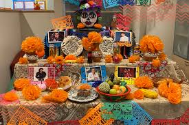

This brilliant blending of the indigenous and Spanish colonial traditions makes Mexican culture creative and lively. The family and community are held in high esteem in Mexican tradition and community, as will be clearly seen in many celebrations and festivals. Of all the traditions celebrated, one of the most important is Día de los Muertos, or Day of the Dead: a colorful tribute to the loved ones who have passed on. Families construct altars with photographs, marigold flowers and favourite food in worshiping their ancestors with joyous affection. This festival holds the celebration that death is not the end but only a journey, reflecting profound respect for life's cycle. Another stronghold is Mexican food, rich in flavor and multicolored in preparation. Each staple around which most dishes are created consists of corn, beans, and chili peppers; regionally, people use foods to display how unique they are. Tacos, enchiladas, and mole represent not only meals but a whole cultural identity of different regions. Celebrations involve traditional foods. This shows that sharing meals with family or friends matters. It was through such methods like the grinding of corn using a metate that passed from generation to generation, and obviously, strongly remained in contact with the past.

The overall sense of Mexican artistic expressions, from bright murals to pottery designs, tells their history and social problems. Famous artists, such as Diego Rivera and Frida Kahlo, drove through their art strong messages toward the richness of an artistic heritage. Folk arts, particularly textiles and Day of the Dead decorations are an artistic and resourceful expression, while music and dance is also greatly represented by styles such as mariachi and folklorico, which mark the cultural heritage through rhythmic and movement styles. Mexicans celebrate with what better makes their culture more vigorous; its rich ability to mix a little of the old with a little of the new in terms of identity that continues to evolve yet respects deep traditions.